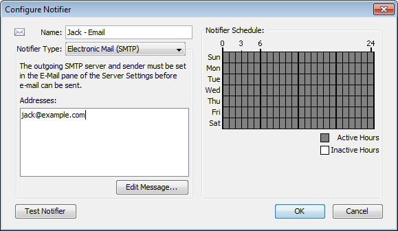

<?xml version="1.0" encoding="utf-8"?>
<html xmlns:MadCap="http://www.madcapsoftware.com/Schemas/MadCap.xsd" MadCap:conditions="Primary.online,Primary.print" MadCap:check_list="Ran Smart Index" MadCap:timeEstimate="0" MadCap:priority="0" MadCap:status="In Progress" MadCap:lastBlockDepth="5" MadCap:lastHeight="775" MadCap:lastWidth="576" MadCap:fileTags="status_tags.No Changes">
    <head><title>Notification by E-Mail</title>
        <link rel="StyleSheet" href="../../default.css" />
    </head>
    <body>
        <h1 class="L2">
            <MadCap:keyword term="E-mail Notification Message;Addresses;Specifying" />
            <MadCap:keyword term="Send:e-mail">
            </MadCap:keyword>
            <MadCap:keyword term="Enter:e-mail" />
            <MadCap:keyword term="Configuring" />
            <MadCap:keyword term="Configuring:E-Mail Notifier" />
            <MadCap:keyword term="Configuring:e-mail" />
            <MadCap:keyword term="E-mail" />
            <MadCap:keyword term="E-mail:Configuring" />
            <MadCap:keyword term="E-Mail Notifier" />
            <MadCap:keyword term="E-Mail Notifier:Configuring" />Configuring an E-Mail Notifier
         </h1>
        <p>
            <MadCap:keyword term="Send" />
            <MadCap:keyword term="E-mail:send" />
            <MadCap:keyword term="E-mail:Use" />
            <MadCap:keyword term="Notifier Type" />
            <MadCap:keyword term="Message Editor window:Use" />
            <MadCap:keyword term="Edit E-mail Message window:shows" />Use an e-mail notifier to send an e-mail message to one or more
 recipients. The e-mail message can provide detailed information about the device that
 triggered the notifier.&#160;The example below&#160;shows the Configure
 Notifier window for the E-mail notifier type.
         </p>
        <p style="text-align: center;">
            <i style="font-style: italic;">&#160;Configuring an e-mail notifier.</i>
        </p>
        <p><b style="font-weight: bold;">To configure an e-mail notifier:</b>
        </p>
        <ol>
            <li>
                <MadCap:keyword term="Specifying:SMTP" />
                <MadCap:keyword term="Configure Notifier:Configure Notifier window" />
                <MadCap:keyword term="SMTP" />
                <MadCap:keyword term="Outgoing:SMTP" />
                <MadCap:keyword term="Electronic" />In the Configure Notifier window, choose "Electronic mail
 (SMTP)" from the <b><i>Notifier Type</i></b> drop-down menu.
            </li>
            <li>In the <b><i>Address</i></b><MadCap:keyword term="Enter" /><MadCap:keyword term="E-mail:enter" /> box, enter the e-mail address you
 want to receive the notification.
You can enter multiple addresses, separated by commas, spaces, tabs, newlines, or carriage returns.</li>
        </ol>
        <p><b>Note:</b>
            <MadCap:keyword term="SMTP:specify" />
            <MadCap:keyword term="SMTP:outgoing" />
            <MadCap:keyword term="Outgoing" /> E-mail is sent using an outgoing SMTP mail server. Before InterMapper can send e-mail notifications, you must specify the SMTP host you want to use for sending e-mail notifications. For more information on 
	how to specify your outgoing SMTP mail server (and a backup server) see <a href="../../08-Server_Settings/08-02-Server_Prefs/emailprefs.html">E-mail Preferences<MadCap:xref href="../../08-Server_Settings/08-02-Server_Prefs/emailprefs.html" target="" title="" alt="" MadCap:conditions="Primary.print" /></a>. </p>
        <h2 class="pagebreakbefore"><a name="editemailmessage"></a>
            <MadCap:keyword term="TEXT" />
            <MadCap:keyword term="TEXT:Editing" />
            <MadCap:keyword term="Edit" />
            <MadCap:keyword term="Edit:Text" />Editing the Text of an E-mail Notification Message </h2>
        <p class="floatright">
            
        </p>
        <p><i style="font-style: italic;"><br /><MadCap:keyword term="Showing" /><MadCap:keyword term="Showing:Edit E-mail Message window" /><MadCap:keyword term="Edit E-mail Message window" />Edit E-mail Message window,
 showing the default e-mail message.</i>
        </p>
        <p>An E-mail notifier sends a text message that describes the failure.
         </p>
        <p>
            <MadCap:keyword term="Message Editor window" />Use the Edit Message window to edit the message sent by the notifier.
 The example below shows the Edit E-mail Message window containing
 the default e-mail message. The list at the lower left contains
 variables you can substitute in the text.
         </p>
        <p>Double-click an item to insert it into the message text. When the
 notification is sent, the inserted item is replaced with its
 current value in the message text.
</p>
        <table style="clear: right;width: 100%;border-spacing: 0px;border-spacing: 0px;" cellspacing="0" width="100%">
            <col style="width: 0%;" />
            <col />
            <tr>
                <td style="text-align: left;padding-left: 5px;padding-top: 5px;padding-right: 5px;padding-bottom: 5px;" align="left" valign="top"><b style="font-weight: bold;">Subject :</b>
                </td>
                <td style="text-align: left;padding-left: 5px;padding-top: 5px;padding-right: 5px;padding-bottom: 5px;" align="left" valign="top"><pre class="code"><MadCap:keyword term="Device Name" />&lt;Event&gt;:
 &lt;Device Name&gt;</pre>
                </td>
            </tr>
            <tr>
                <td style="text-align: left;padding-left: 5px;padding-top: 5px;padding-right: 5px;padding-bottom: 5px;" align="left" valign="top"><b style="font-weight: bold;">Message:</b>
                </td>
                <td style="text-align: left;padding-left: 5px;padding-top: 5px;padding-right: 5px;padding-bottom: 5px;" align="left" valign="top"><pre class="code"><MadCap:keyword term="Timestamp" /><MadCap:keyword term="Version" />&lt;Timestamp&gt;:
 Message from InterMapper &lt;Version&gt;<br />Event: &lt;Event&gt;<br />Name: &lt;Device Name&gt;<br /><MadCap:keyword term="Document Name" />Document: &lt;Document Name&gt;<br /><MadCap:keyword term="Device Address" />Address: &lt;Device Address&gt;<br /><MadCap:keyword term="Probe Type" />Probe Type: &lt;Probe Type&gt;<br /><MadCap:keyword term="Device Condition" />Condition: &lt;Device Condition&gt;<br /><MadCap:keyword term="Last Down" />Time since last
 reported down: &lt;Last Down&gt;<br /><MadCap:keyword term="SysUpTime" />Device's up time: &lt;SysUpTime&gt;</pre>
                </td>
            </tr>
        </table>
        <p><b>Note:</b> You can also use InterMapper variables and Javascript to insert information dynamically into a notifier's subject or message text. For more information, see <a href="../../05-Arranging_Your_Map/Dynamic_Label_Text.htm">Dynamic Label &amp; Alert Text<MadCap:xref href="../../05-Arranging_Your_Map/Dynamic_Label_Text.htm" target="" title="" alt=""> (Pg 1)</MadCap:xref></a>.</p>
    </body>
</html>